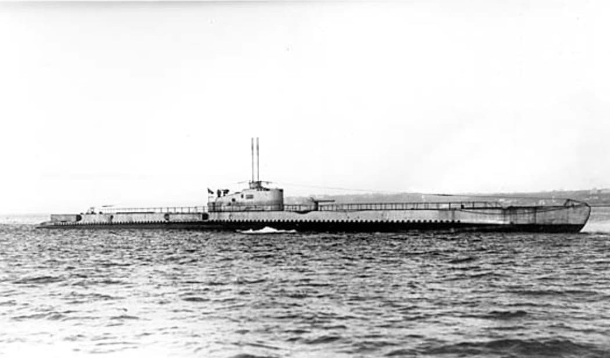
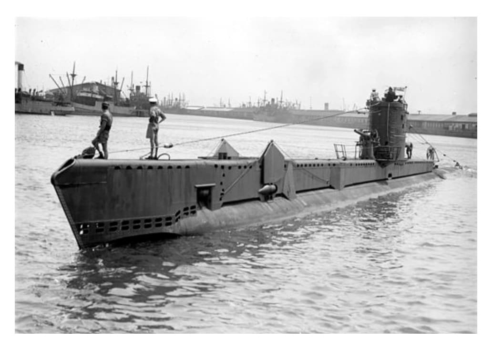
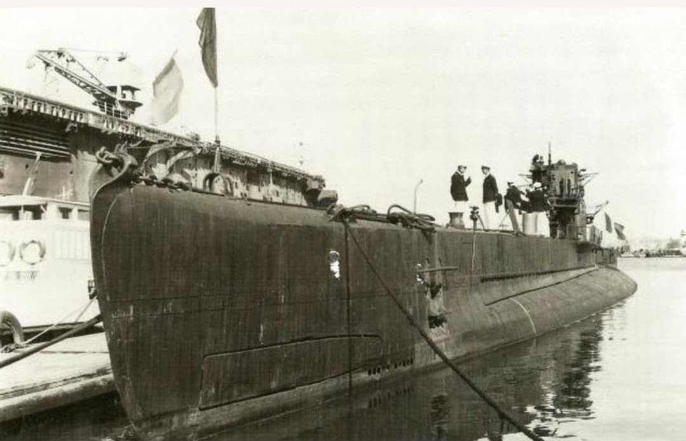
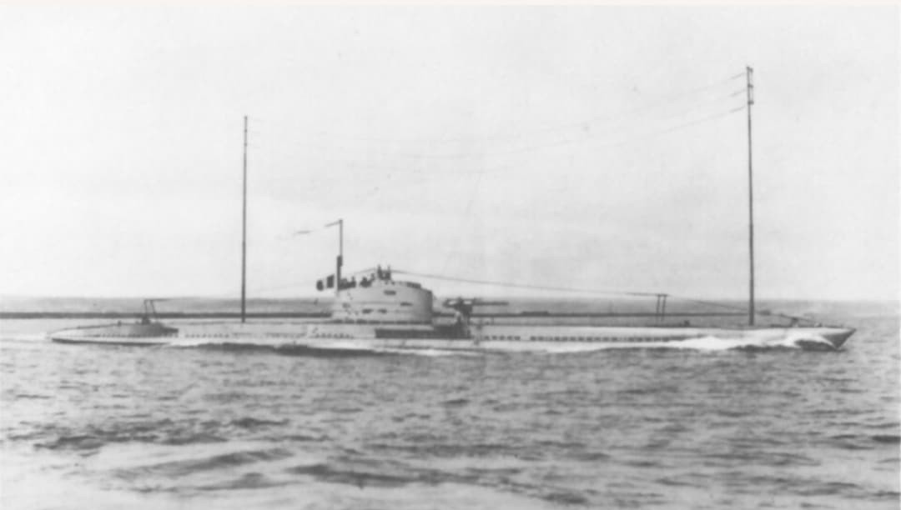
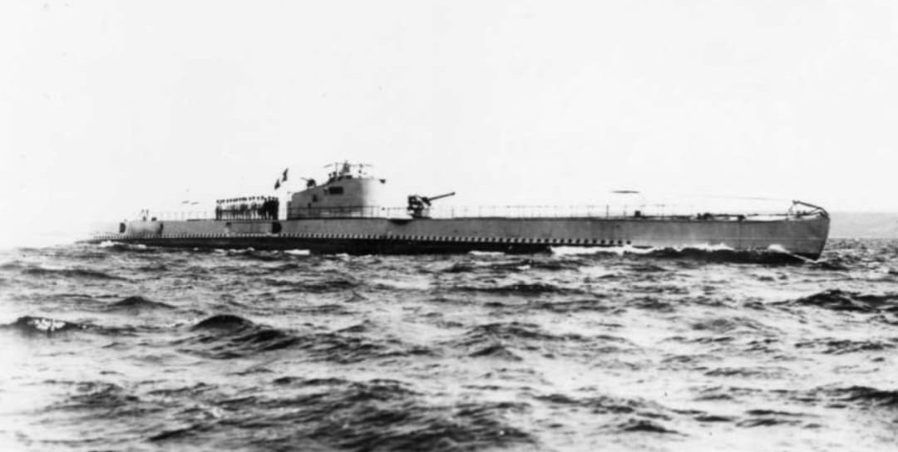
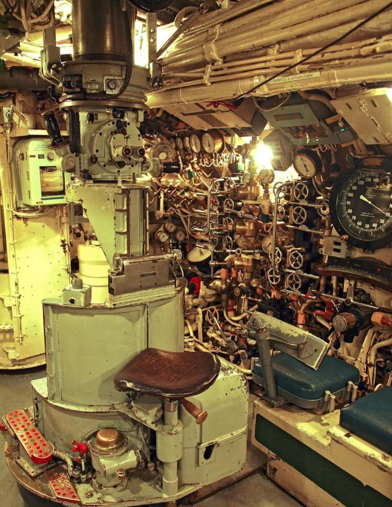

En 1939, la Marine nationale aligne 77 sous-marins répartis en plusieurs catégories : les océaniques (1 500 tonnes), les 600 tonnes, les sous-marins mouilleurs de mines et le Surcouf, croiseur sous-marin unique au monde.
Cette page présente les principales classes et la liste des sous-marins français, organisée en tableaux pour une lecture muséale claire.

Les sous-marins océaniques constituent la force de frappe lointaine de la Marine nationale. Ils sont conçus pour les opérations en haute mer, avec une grande autonomie et un armement important.
| Redoutable | Vengeur | Pascal | Pasteur | Henri Poincaré |
| Poncelet | Archimède | Fresnel | Monge | Achille |
| Ajax | Actéon | Achéron | Argo | Prométhée |
| Persée | Protée | Pégase | Phénix | L'Espoir |
| Le Glorieux | Le Centaure | Le Héros | Le Conquérant | Le Tonnant |
| Agosta | Bévéziers | Sidi-Ferruch | Sfax | Casabianca |


Les sous-marins de 600 tonnes sont des unités côtières et de moyenne portée, principalement déployées en Méditerranée. Ils forment une grande partie de la flotte sous-marine française.
| Sirène | Naïade | Néréide | Galatée | Ariane |
| Andromède | Amphitrite | Circé | Calypso | Doris |
| Thétis | Argonaute | Aréthuse | Atalante | La Vestale |
| La Sultane | Diane | Méduse | Orphée | Eurydice |
| Orion | Ondine | Minerve | Junon | Vénus |
| Iris | Cérès | Pallas |


Les sous-marins mouilleurs de mines complètent la flotte par des missions de minage offensif et défensif, notamment en Méditerranée.
| Saphir | Turquoise | Rubis | Perle | Diamant |
| Nautilus |
La classe Requin regroupe des sous-marins océaniques antérieurs à la classe Redoutable. Une partie de ces unités est encore en service au début de la Seconde Guerre mondiale.
| Requin | Souffleur | Morse | Narval | Marsouin |
| Phoque | Caïman | Espadon | Sphyrna | Dauphin |
Le Surcouf est un navire unique au monde : croiseur sous-marin armé de deux canons de 203 mm, doté d’un hangar pour hydravion MB.411 et d’une autonomie exceptionnelle. Il constitue une classe à part entière.
Fiche détaillée : Surcouf – Croiseur sous-marin
Le poste central regroupe périscope, commandes de plongée, manomètres et communications internes. C’est le cœur opérationnel du sous-marin.

Page du Musée HOP WW2 – Section sous-marins français